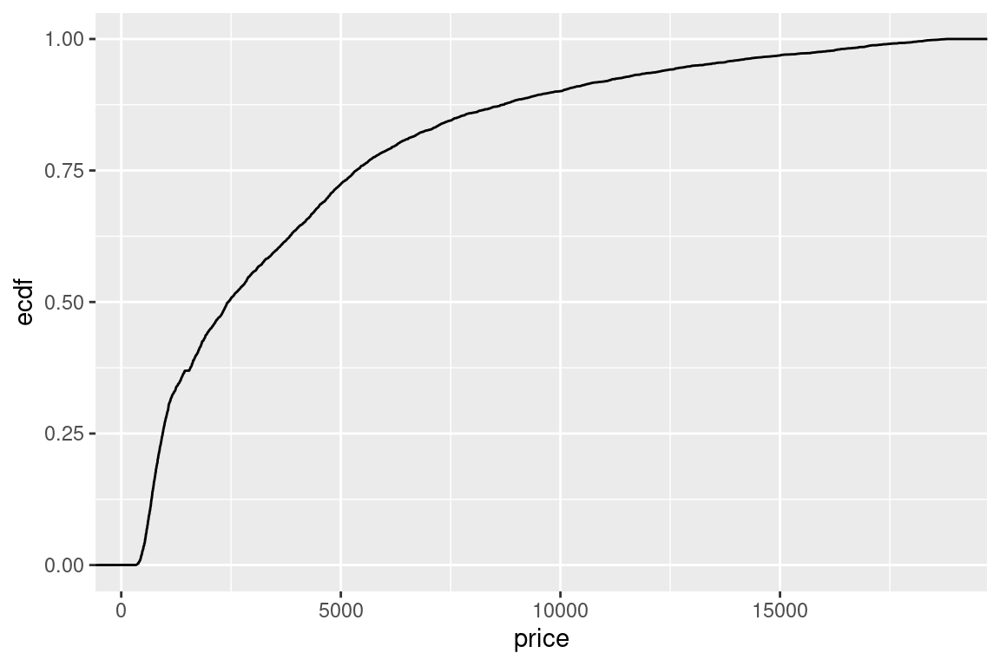

library("reticulate")
# reticulate::install_miniconda()
use_python(file.path(miniconda_path(), "bin", "python3.11"))
# py_install("pandas")
# py_install("matplotlib")
# py_install("seaborn")Empirical Cumulative Distribution Function (ECDF)
Fist explanation
An Empirical Cumulative Distribution Function (ECDF) is a visualization tool that provides insight into the distribution of a dataset. It represents the cumulative distribution of the data’s values. An ECDF plot is constructed by ordering the data points and plotting them as a step function. This visual representation offers a detailed view of how data is spread across various values.
About the ecdf visualization
The ecdf plot shows the entire range of values in your dataset on the x-axis, and as you move along the x-axis from left to right, the y-axis represents the proportion of data points that fall below each value. Therefore, the ECDF starts at 0 on the y-axis (indicating no data points are less than the minimum value) and ends at 1 (indicating all data points are less than or equal to the maximum value).
To create a univariate ECDF, you follow these steps:
Sort the data in ascending order.
For each unique data point, calculate the proportion of data points that are less than or equal to it.
Plot the unique data points on the x-axis and their corresponding cumulative proportions on the y-axis. Connect these points with steps.
Bivariate and Multivariate ECDF: While the standard ECDF focuses on a single variable, bivariate and multivariate ECDFs expand this concept to two or more variables. This allows you to explore relationships between variables. To perform a bivariate ECDF, using two variables, you plot points on a 2D plane. The x-axis represents one variable, and the y-axis represents the other. The points’ positions indicate the cumulative distribution of the two variables. Extending to more than two variables is challenging but possible. You can use color or size to represent additional dimensions or use multiple plots to explore different combinations. Bivariate or multivariate ECDF is not an usual practice.
ECDF visualization can be applied to a numerical Variables: For exploring the distribution of continuous data like age, income, or temperature. The application to categorical variables, time series data and geospatial data remains experimental.
The ECDF allows you to make several observations about the data:
The shape of the ECDF provides insights into the distribution. Steep sections indicate where the data is densely populated, while flat sections suggest data sparsity.
Percentiles, such as the median, can be read directly from the plot. For example, the median is where the ECDF crosses 0.5 on the y-axis.
By comparing multiple ECDFs, you can understand differences between datasets.
ECDFs are useful for comparing distributions, assessing the spread of data, identifying central tendencies, and detecting the presence of outliers. They are a valuable tool in data exploration, statistical analysis, and decision-making processes.
Visual alphabet
The visual alphabet of an ECDF (Empirical Cumulative Distribution Function) plot can be explained in terms of various graphical aspects, which help convey information effectively:
Multiplicity: The ECDF plot usually consists of one or more lines representing different datasets. Multiplicity is evident when multiple lines or datasets are present, enabling comparisons.
Position: The x-axis represents the position of data values. As you move along the x-axis, the ECDF shows the position of data values and how many values fall below or are equal to a specific point.
Length: The length of the plot along the x-axis represents the range of values in the dataset. Longer plots indicate datasets with broader value ranges.
Angle: ECDF plots typically do not rely on angles to convey information. The primary graphical feature is the step-like progression of data points on the plot.
Area: While ECDFs don’t emphasize area as a primary visual encoding, the shape of the curve formed by the steps gives a sense of density in specific value ranges. A steep section may indicate a high density of data points.
Color: Color can be used to distinguish multiple datasets or to emphasize specific data points or ranges. Color can aid in highlighting patterns and relationships when multiple ECDFs are plotted together.
Opacity: Opacity (transparency) can be used to make overlapping data points more visible when multiple datasets are plotted on the same graph. It can help reduce overplotting.
3D: ECDFs are typically 2D plots. However, you can represent additional dimensions by using color or size to show variations along a third dimension, effectively simulating 3D-like effects. 3D ECDF is not commonly used. The primary focus is on the visual aspects of position, length, and shape.
Shape: The primary shape in an ECDF plot is the step function, created by connecting data points with vertical and horizontal lines. The shape of this step function reveals the cumulative distribution of the data.
Texture: Texture is not commonly used in ECDF plots. The primary focus is on the visual aspects of position, length, and shape.
Orientation: The orientation of an ECDF plot is typically horizontal or vertical, depending on how data values are placed on the x-axis. Horizontal ECDFs can be useful when you have a limited horizontal space or when comparing datasets with different units or scales.
Programming
First we can configure the environment for mixed programming. Using another engine will need another setup.
library("knitr")
opts_chunk$set(
fig.width = 6,
fig.height = 4,
message = FALSE,
warning = FALSE,
echo = TRUE,
results = "asis"
)library("ggplot2")
library("magrittr")
library("dplyr")
diamonds %<>%
sample_n(5000) # disminuir los datos p
# diamonds %>%
# glimpseimport numpy as np
import pandas as pd
import matplotlib.pyplot as plt
import seaborn as sns
import matplotlib.colors
# You can uncomment this line to change the style of the graphs.
# plt.style.use('ggplot')
diamonds = r.diamondsUsing r-base
plot(ecdf(diamonds[["price"]]))# using pipe notation
# diamonds %>%
# pull(price) %>%
# ecdf %>%
# plotStep-by-Step Breakdown:
diamonds[[“price”]]: This part of the code accesses the “diamonds” dataset and selects the “price” column. The double square brackets [[ ]] are used to extract the data from that specific column, resulting in a numeric vector of diamond prices.
ecdf(diamonds[[“price”]]): The ecdf() function is applied to the “price” column. It creates an ECDF object that represents the empirical cumulative distribution of the prices in the dataset. This object stores information about how many data points are less than or equal to each unique value in the “price” column.
plot(ecdf(diamonds[[“price”]])): The plot() function is used to create a plot of the ECDF object created in the previous step. It generates the ECDF plot, with the x-axis showing the unique values of diamond prices, and the y-axis showing the cumulative proportion of prices below or equal to each value.
Using ggplot
ggplot(diamonds) +
aes(x = price) +
geom_line(stat="ecdf")
Step-by-Step Breakdown:
ggplot(diamonds): This part initializes a ggplot2 plot using the “diamonds” dataset. In the ggplot2 framework, you begin with the ggplot() function and specify the dataset you want to use for the plot, in this case, “diamonds.”
aes(x = price): The aes() function is used to specify aesthetic mappings. It tells ggplot2 how to map the data to the plot’s visual properties. In this case, x = price means that the “price” column from the “diamonds” dataset is mapped to the x-axis of the plot. This is the variable for which the ECDF will be calculated.
geom_line(stat=“ecdf”): This line adds the geometric element to the plot. The geom_line() function is used to create a line plot. The stat=“ecdf” argument specifies that the line should represent the ECDF of the “price” variable. This means it will show the cumulative distribution of diamond prices.
Using pandas
diamonds.price.hist(cumulative=True, density=1, bins=100)
plt.show()plt.close()pandas plotting summary
diamonds.price is assumed to be a variable representing a dataset of diamond prices.
.hist(): This is a method used with Pandas DataFrames to create a histogram.
cumulative=True: This parameter specifies that a cumulative histogram should be generated instead of a standard histogram. A cumulative histogram shows the cumulative distribution of the data, indicating how many data points are less than or equal to a particular value.
density=1: Setting this parameter to 1 normalizes the histogram so that the area under the histogram equals 1. This is often used to ensure that the cumulative histogram represents proportions or probabilities.
plt.show(): This line is used to display the cumulative histogram plot on the screen. It is typically necessary to visualize the plot in an interactive environment like Jupyter Notebook or a Python IDE.
plt.close(): This line is used to close the current plot or figure. It’s a good practice to close plots explicitly after displaying them to free up resources and ensure that subsequent plots are displayed separately.
Using seaborn
sns.ecdfplot(x = "price", data = diamonds)Explanation of seaborn use
sns.ecdfplot(): This is a function provided by the Seaborn library for creating ECDF plots. It is used to create a plot that shows the empirical cumulative distribution of a variable.
x=“price”: This parameter specifies the variable that you want to analyze and plot as an ECDF. In this case, “price” is the variable from the “diamonds” dataset that will be used.
data=diamonds: The data parameter specifies the dataset that contains the variable you want to plot. Here, “diamonds” is assumed to be a dataset.
Using matplotlib
plt.hist(diamonds["price"], cumulative=True, density=1, bins=100)
plt.show()plt.close()How it works
plt.hist(): This is a function provided by the Matplotlib library for creating histograms.
diamonds[“price”]: This part assumes that “diamonds” is a dataset, and you are accessing the “price” column. This is the data you want to create a histogram for.
cumulative=True: This parameter specifies that a cumulative histogram should be generated instead of a standard histogram. A cumulative histogram shows the cumulative distribution of the data, indicating how many data points are less than or equal to a particular value.
density=1: Setting this parameter to 1 normalizes the histogram so that the area under the histogram equals 1. This is often used to ensure that the cumulative histogram represents proportions or probabilities.
bins=100: The bins parameter specifies the number of bins or intervals used to divide the data range. In this case, 100 bins are used to create a detailed representation of the data distribution.
plt.show(): This line is used to display the cumulative histogram plot on the screen. It is typically necessary to visualize the plot in an interactive environment like Jupyter Notebook or a Python IDE.
plt.close(): This line is used to close the current plot or figure. It’s a good practice to close plots explicitly after displaying them to free up resources and ensure that subsequent plots are displayed separately.